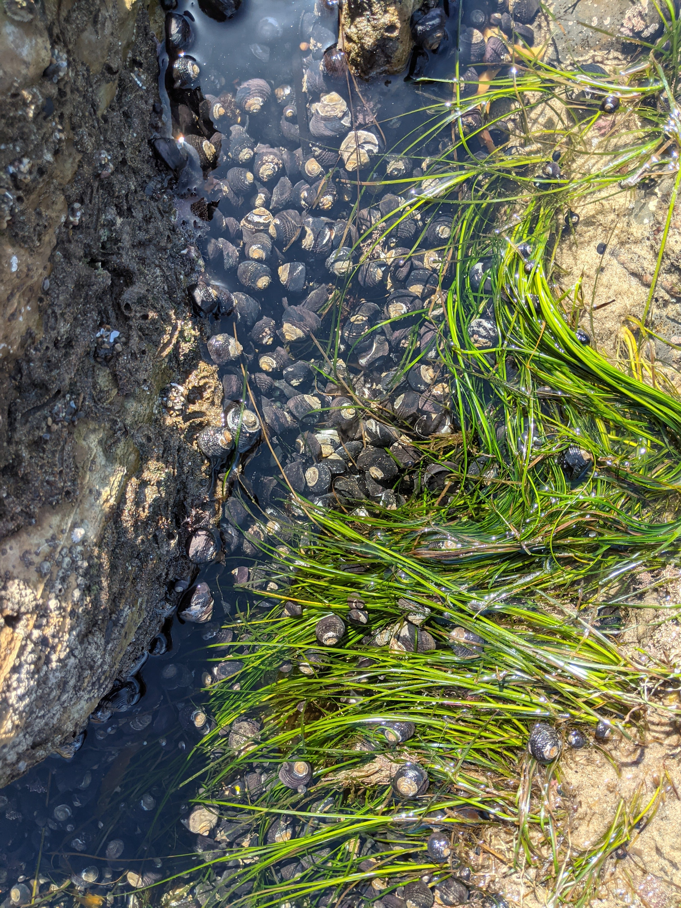
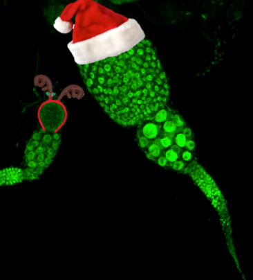
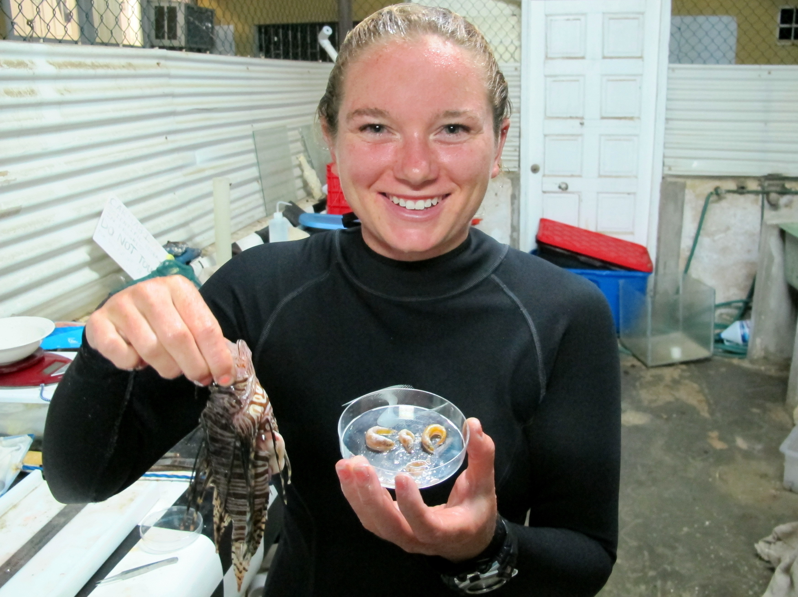
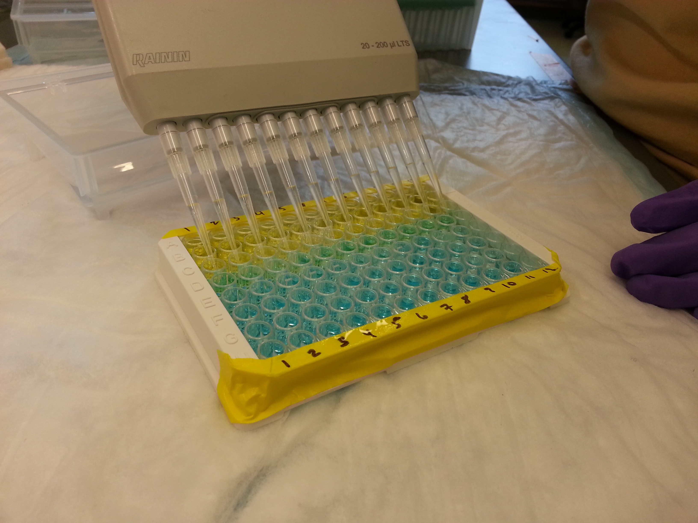

Research Areas
I am using the strawberry anemone (Corynactis californica) to study the ecological consequences of intraspecific variation at the population level.

Traditionally, ecologists have viewed between-species (interspecific) diversity as a crucial element of the natural world. However, we are increasingly recognizing the influence of within-species (intraspecific) diversity to ecosystem structure and community dynamics.
The strawberry anemone (Corynactis californica) is a phenotypically diverse, clonal organism found on temperate rocky reefs in the California Current Large Marine Ecosystem. The strawberry anemone is a fierce competitor that aggressively defends its territory by growing colonies through asexual reproduction and using its nematocysts (stinging cells) against other benthic species. As a result, strawberry anemones have the capacity to provide an associational refuge to macroalgae and invertebrates from benthic predators that avoid contact with the nematocysts.
Variation between strawberry anemone colonies likely has important implications for their ecological role on temperate rocky reefs. For example, sea urchins forage less when in the presence of particular strawberry anemone color morphs (see experimental results here), and individual strawberry anemone colonies vary in the rate at which they kill corals and anemones using their nematocysts. My research on Corynactis californica explores the various ways this understudied corallimorph may further our understanding of how intraspecific variation may affect ecological dynamics in kelp forest communities.
Check out my Github repositories for my research-in-progress on Corynactis californica here and here.

I am using the black turban snail (Tegula funebralis) to explore large-scale patterns of intraspecific variation.

Tegula funebralis exist across the California Current Large Marine Ecosystem, which extends from Baja California (Mexico) to British Columbia (Canada). Across this broad geographic range, Tegula funebralis populations are exposed to a mosaic of intertidal pH conditions (thanks to variable upwelling regimes) as well as different predator communities.
Climate change is predicted to intensify upwelling and shift ecological communities, but there is limited research on how marine populations across the CCLME may differ in their response to OA and altered community structure.
My research explores how Tegula funebralis populations may be responding differently to variable pH conditions and predator communities across their range. This research will reveal how a species may vary in its vulnerability and resiliency to environmental change across its range, and may inform ecosystem management and conservation strategies in the context of future climate change scenarios.


Check out current research being conducted by my fellow scientists in the Hofmann Lab at the University of California, Santa Barbara here!
As a research assistant in the Kronauer Lab at Rockefeller University, I worked on many projects developing the clonal raider ant (Ooceraea biroi) as a model organism to answer evolutionary, molecular, and neurobiological questions. One project sought to better understand the mechanistic basis of reproductive division of labor, the phenomenon attributed to eusocial insects (like bees, wasps, and ants) in which a single individual (the queen) lays eggs and all other individuals (the workers) carry out the other tasks necessary for the colony to function. For this project, I worked with graduate student Vikram Chandra and explored the role of a hormone - ILP2 (insulin-like peptide 2) - to the reproductive and brood-care phases of the clonal raider ant. We injected ants with ILP2 during their brood-care phase (when they shouldn’t be reproducing) and measured significant oocyte activity (egg production). Coupled with transcriptomics and brain antibody staining, our study provides evidence for the importance of ILP2, nutrition, and larval signals to division of labor in eusocial organisms. You can read more about this research in the publication here.

My research on invasive lionfish (Pterois volitans/miles) based out of the Caribbean Marine Biological Institute had two major focuses - predator prey interactions and pollutant bioaccumulation.
Predator-prey interactions

Invasive lionfish are creating extensive problems for many coral reef ecosystems by consuming massive numbers of reef fishes. Many scientists attribute this to the lionfish being a generalist predator - for example, when scientists dissect the stomachs of invasive lionfish across the Caribbean, they find a diversity of species (although some species are more common than others). I wanted to know if, when given a choice between prey items, lionfish are selective foragers. My field assistant extraordinaire, Tyler Fountain, and I stocked a large underwater enclosure containing an artificial reef with 3 prey species frequently consumed by invasive lionfish and observed what lionfish ate when released into the enclosures. Surprisingly, we found that lionfish consistently exhibited a preference for one prey species in particular - brown chromis. Knowing that lionfish exhibit active prey discrimination will help researchers better understand and predict the effects of lionfish on coral reef fish communities. You can learn more in the publication here, the repository here, and in a blog I maintained while working in Curaçao here.
Pollutant bioaccumulation

One way that humans are fighting to control invasive lionfish on coral reefs is by eating them. Because lionfish are a mesopredator (one step below apex predators), they have the capacity to bioaccumulate high, and possibly dangerous, levels of pollutants such as mercury and other heavy metals. On the island of Curaçao, there is an oil refinery that releases contaminants into the air and marine environment. I collected hundreds of lionfish around Curaçao and analyzed their tissue for metal contaminants. Unsurprisingly, mercury concentrations were higher in larger fish, but mercury concentrations overall were well below the human health criterion established by the Environmental Protection Agency. Lionfish also contained low levels of other metals such as arsenic and selenium. These findings support continued - and enthusiastic - consumption of invasive lionfish as a sustainable and environmentally-beneficial source of protein and income for local communities and tourists. You can read more about this research here and here.
As an undergraduate at Dartmouth, I worked with Jessica Trout-Haney in the Cottingham Lab on Nostoc pruniforme (known colloquially as the sea tomato), a benthic cyanobacteria found in ponds and lakes in Greenland. Nostoc can be incredibly dense in some lakes (over 9000/square meter) and likely contribute microcystins (a cyanotoxin) into aquatic ecosystems. Our study coupled observations and experiments to examine how Nostoc produce and release microcystins, and my focus was on how microcystin production varies throughout the colony. We found microcystins throughout the colony and observed undamaged colonies leaking microcystins into the surrounding water. Coupled with field observations of elevated microcystin concentrations around Nostoc colonies in Greenlandic lakes, these results provide strong evidence for Nostoc pruniforme as microcystin producers in Arctic freshwater ecosystems. Learn more about this research in the publication here.
